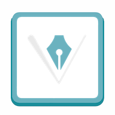
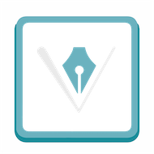

A propos
Je suis actuellement en formation de Web Designer pour une durée de 8 mois.
Cette formation comporte 2 mois de stage en entreprise.
C'est pour cette raison que que j'ai créé ce site. J'espère qu'à travers cette page vous
en apprendrez plus sur mon expérience, mes capacités, mes loisirs, mes passions.
Formations
Je suis actuellement une formation certifiante de niveau III en WebDesign et Développement
FrontEnd.
J'ai appris à travailler avec les outils de développement, tels que L' HTML,
le CSS, JavaScript.
Comme nous travaillons en équipe , nous utilisons des logiciels et des applications de
communication, Slack,
de gestion de projets, Trello,
de création de maquette Moqups, nous utilisons l'approche
AGILE pour la gestion de nos projets.
Pour la partie Design, j'ai travaillé sur Illustrator,
Photoshop, Adobe XD.
Expériences
J'ai 50 ans , je suis passionnée d'informatique, de dessin et de photographie.
Après avoir passé 30 ans dans la comptabilité et la finance, l'idée de reconversion
professionnelle
c'est avérée une bonne solution pour allier mes passions. Mes précédentes expériences m'ont
appris à travailler en équipe,
à savoir organiser mon travail en fonction des dateline. J'ai travaillé durant de nombreuses
années en totale autonomie, j'ai appris de façon autodictacte à travailler sur tous les outils
informatique qui ont étaient mis à ma disposition.


 

 https://cheventner.github.io/sitecv/
https://cheventner.github.io/sitecv/{kind=link}
{kind=link}
{kind=link}
{kind=link}
{kind=link}
{kind=link}
{kind=link}